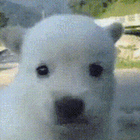

강아지가 학대를 받았는지 알아내는 방법
댓글
할배를 개같이 팼어요

노견학대멈춰
조건반사...
영감님...

마메조!!!

어떤 삶을 살아오신겁니까 휴먼 ㅠㅠ
반대로 쓰다듬을 많이 받은 개는 귀가 젖혀지고 고개를 쳐들지..
맞아 그거 진짜 귀여워
손 든 다음에 귀 젖혀지는데 안 쓰담아주면 지 머리를 내 손에 갖다댐
저... 왜 아무도 히틀러 드립 안 함...
저 영상 업로드 후에 또 개같이 맞았을거야 ㅠㅠ
저기 개는 한번도 안맞았는데, 어케 개같이
맞음… 할아버지같이 맞았을거야 ㅠㅠ
유쾌한 노부부~
뒤에있는 노견은 학대 당했네